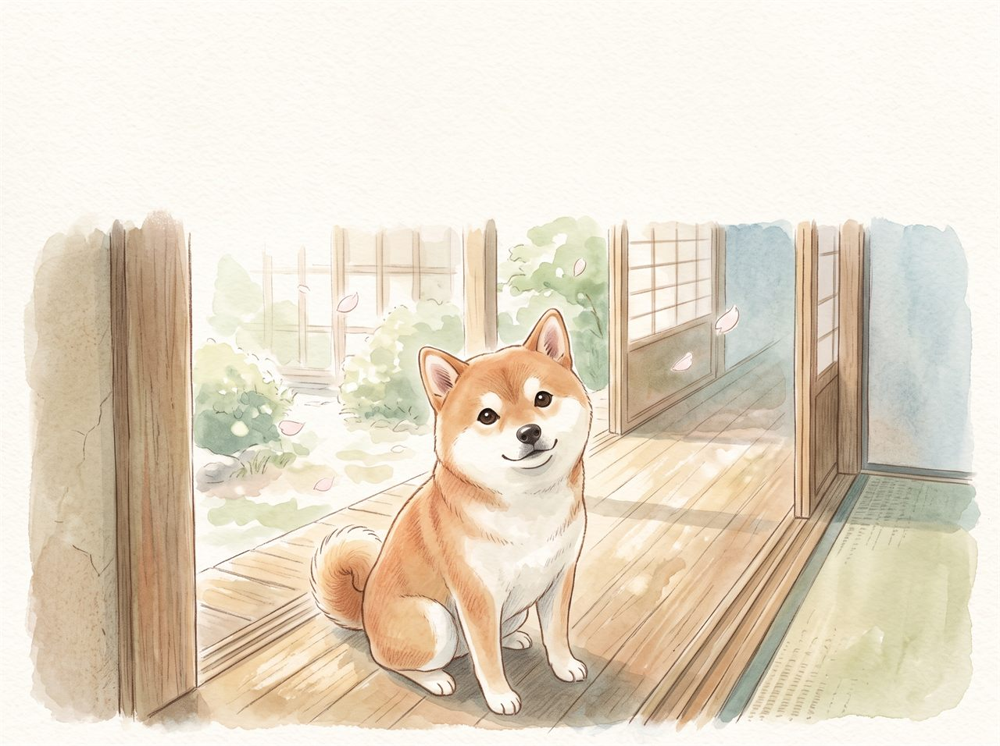
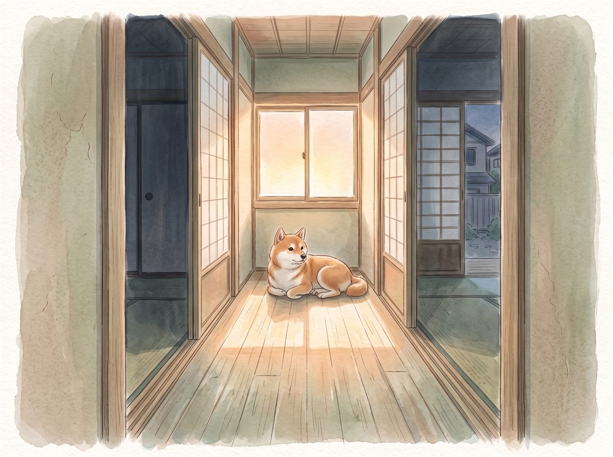
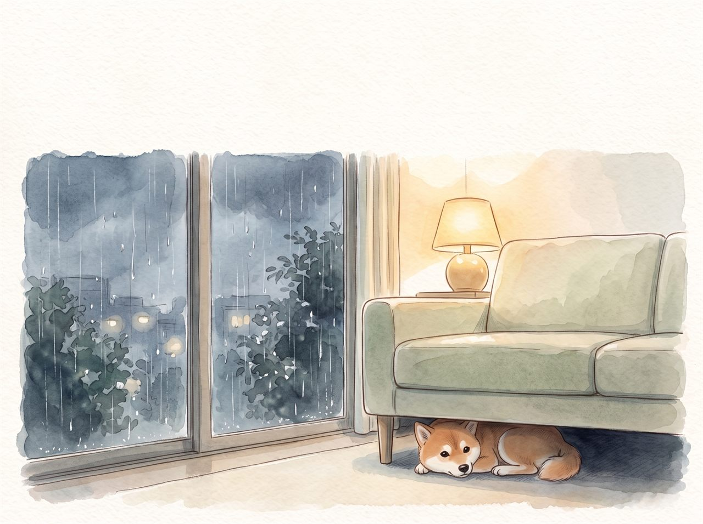
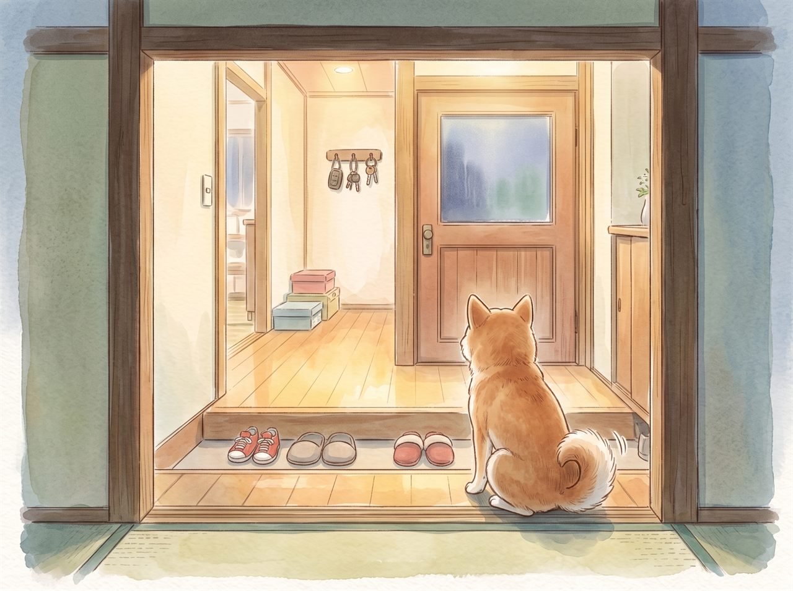
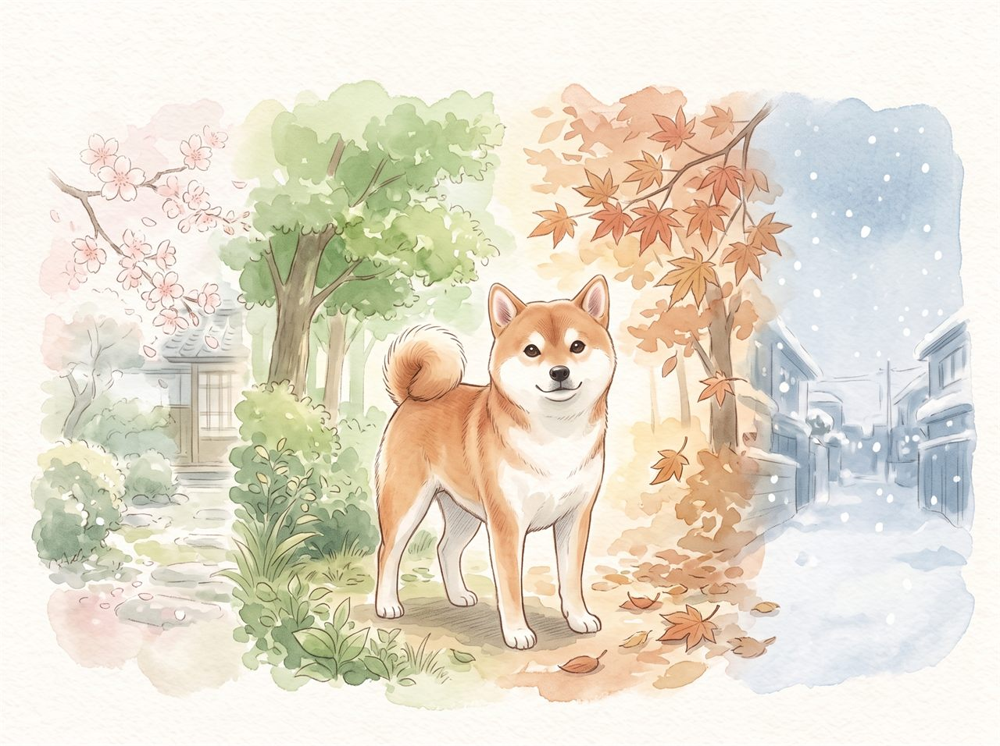
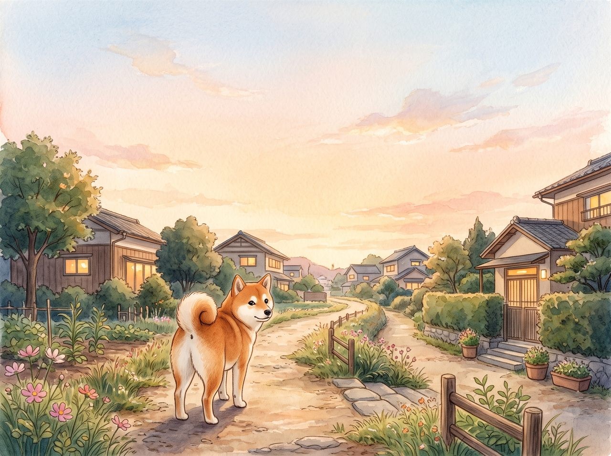

表紙
イラスト準備中
表紙
ももと、おかえりの日
柴犬のもも・5さい
お迎えして5年のきねんに
見本 お迎え記念日・5年
全8ページのデジタル絵本
柴犬のもも・5さい／お迎えして5年のきねんに
実際にお届けしているものと同じ形式の見本を、1冊まるごと公開しています。 主人公の「もも」は、この見本のために用意した架空の柴犬です。実在の犬や飼い主さんではありません。
ご依頼いただいた場合は、うちの子のお写真とうかがったお話をもとに、この形で1冊お作りします。
この1冊のもとになった話
特別なエピソードを用意していただく必要はありません。「いつもやっていること」を教えていただければ、そこから物語になります。
ここから本編

イラスト準備中
ももと、おかえりの日
柴犬のもも・5さい
お迎えして5年のきねんに

イラスト準備中
ももは、あさが はじまるまえに おきています。
ろうかの つきあたり、ひかりの さす まどの したが、ももの ばしょ。
だれかが おきてくる おとを、しっぽで かぞえながら まっています。

イラスト準備中
さんぽの みちで、ももには きめている かどが ひとつ。
そこで かならず ふりかえって、ついてきているか たしかめます。
「いるよ」と いうと、また あるきはじめる。それが ももの ルールです。

イラスト準備中
ほんとうは、ももは こわがりです。
かみなりの ひは、ソファの したで まるくなって うごきません。
おおきな トラックの おとにも、ちいさく みみを ふせます。

イラスト準備中
それなのに、あのひ。
はじめて うちに きた ちいさな おきゃくさんが ないたとき、
ももは いちばんに とんでいって、そのこの あしもとに すわりました。
こわがりの ももが、いちばん さきに。

イラスト準備中
ももは、まつのが とくいです。
げんかんの まえで、かばんの おとを おぼえていて、
かえってくる ひとの あしおとだけ、ちゃんと ききわけます。
ももが しっぽを ふるのは、まちがえたことが ありません。

イラスト準備中
5かい、さくらが さきました。
5かい、なつが きて、5かい、ゆきが ふりました。
その ぜんぶに、ももが いました。

イラスト準備中
もも、おかえりの日 おめでとう。
きみが うちに きた日から、
この いえには、まいにち だれかを まつ しあわせが あります。
これからも、いっしょに あるこうね。

イラスト準備中
おかあさん・おとうさん・さくら より
制作メモ
いただいたお話が、どのページになったかをまとめました。特別なできごとより、毎日くりかえしていることのほうが、絵本にすると効きます。
先行3名の受付
お写真3〜5枚と、こういう「いつものこと」をいくつか教えていただければ作れます。 まずは相談だけでも大丈夫です。先行価格は税込7,700円、お届けは約10日です。
相談の時点で費用はかかりません ／ 内容を確認してから制作可否をご返信します